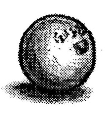
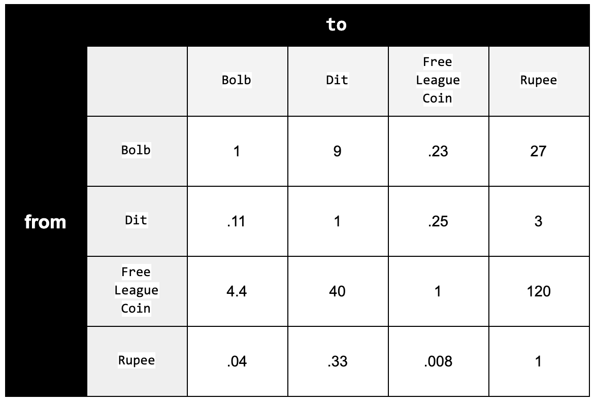
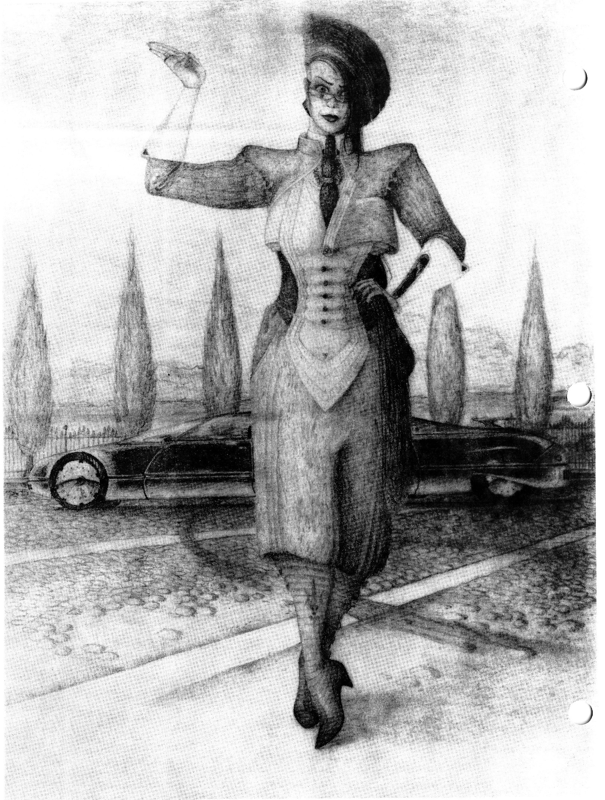

Introduction
Currency
Literally hundreds of societies live under the Foundation, and each has its own distinct sense of value and worth, thus making it extremely difficult to reach even a general consensus on a standard system of monetary exchange. The traditions and customs that have arisen within one people may hold totally different or even opposite meanings for their neighbours, whether they be a few kilometres or a few parsecs distant. A classic example would be the worth of rare resources. Humans, for instance, typically place great value in their planet's aesthetically pleasing rare metals and gemstones, while eebek, whose desert world has but a few scant drops, consider water a precious commodity. Each holds the other's fixation as totally worthless because they themselves are fortunate enough to virtually swim in the stuff. almost all modern transactions occur photo electronically by means of small personalized computer interfaces variably called dit or money "disks" or "chips". These disks are somewhat like wallets; in that they keep a supply of cash readily available and separate from possible funds kept at the Trust. When, for example, a purchase is made, the changes are debited and credited permanently to both the buyers and sellers disk's. The total amount of free theoretical credit in the system at any one time therefore never changes. If one uses up their chip's supply, more can be obtained from their account through public 'banking terminals' located on most core worlds (This can be a slow process, about a day, as the computer might need to link up with a Trust mainframe on Earth, Luna or Awmonee). All disks are issued by the Alliance Financial Trust and are protected by datashields keyed to the owner's individual vocal / thermal sequence, ensuring only he or she will ever have access to their financial records. Even if lost or stolen, AFT representatives can usually reconstruct an accurate profile and issue a new dite within a week.
The Dit
A substance was needed that everyone, regardless of culture, could consider valuable. Indeed, a tall order for a newly emerging galactic government. During the energy recession about eighty years ago, however, a curious trend emerged within some of the larger trading institutions. The cost of constructing large, permanent power generators (of any kind) had risen far beyond what businesspeople of the time were willing to pay, and fledgling colonies were being hit hard. In a matter of a few years, most newer worlds in the Hyades and Quorff quadrants were recalled, and those which couldn't be pulled easily were left to scrape by. Finally, at year's end of 2166, in an act of desperation, Milmoth outer rim miners began demanding compensation for their various services with payments of stored electrical energy. When news of this spread to the core, it wasn't long before anyone who wanted to be guaranteed an exchange offworld was carrying at least a few batts in their pocket. Trading companies slowly worked out a notation with the colonies as the economic conditions improved and the Trading Credit or 'Dit', as it became known, was quickly ushered into electronic monetary mainstream. After the dawn of the 'new fusion era and with the progress in antimatter power, financial forecasters predicted the imminent failure of the dit due to the widespread availability of cheap energy. Indeed, it's value fell sharply in the 2210s, prompting the saying, "not worth it's charge in Coulombs". Fortunately, however, the dit was able to evolve to survive, and today utilizes an aspect of society's prized Deltawarp technology;
One Dit ( Đ ) is equivalent to the current value of the stored potential magneto-gravitational energy of one cubic metre of the substance Courant, at neutral scientific conditions.
- excerpt from the Economic Charter of the Alliance
Financial Trust
Given the widespread rarity, necessity and transport value of courant, the modern dit was understandably proven to be an extremely stable and powerful currency. A convenient way to talk about dits is using metric prefixes like kilo and centi. Thus, instead of saying 7,376,400 as seven million, three hundred seventy-six thousand, four hundred dits, one could say seven point three seven six four megadits. Dits are most often seen used on space stations, starships, and the numerous daughter worlds such as Algor. While they do make it to the surface of homeworlds through starports and major cities, for the most part lesser developed regions still use their traditional monies.
Slang: cred, credit, neutrinotaler, starbuck, trading credit, watt
Other Currencies
Rupees
The Palladium based rupee is a common unit found mainly on Earth and in human centres. It was developed around the 16th century on the Indian subcontinent, and is subdivided into 100 paisa. Denotations include the 1, 2, 5, 10, 25 paisa, and 1 and 5 rupee coins, with various plastic fabric bills for higher denominations. The blue ten rupee note is printed with the holograph of Ceylon's district head, Rebyarna Ramanujan Opar.
Slang: blueback, crimp, tigress
Bolb
Bolb are an eebek money represented by small, milky spheroids filled with about 50 millilitres of unusually enriched saline water. They are made of hard, clear silicates, but can be digested in emergencies to prevent dehydration (1 Bolb has the effect of ½ litre of normal water). Merchants on Awmonee use the bolb only as an aid to their extensive barter system, and consequently bolb only has a direct material value - different denominations are simply different sized spheres. Bolb are naturally cultivated (somewhat like pearls) and are made extremely hard to counterfeit with advanced dyes and marking techniques. Traditionally they are carried by eebek within the outer lip lining their stomach-mouth.
Slang: bek buck, bulb, desert pearl

Slash
The slash is a black market exchange originally used by the blue aracnians but now common throughout the galactic underworld. It involves the continued scarification and dismemberment of individuals unable or unwilling to provide conventional payment (although it is still required). For example, party A wishes to purchase a hot sensor array from party B, but has no capital. Party B can then estimate the item's worth in the digits, limbs organs and sensory devices of party A. If both parties agree, a temporary exchange is made. Note that under the terms of most contracts, the person being slashed may not regrow or buy prosthesis for said area for at least 6 months. Common dit conversions include; non- essential digits, 100; essential digits, 250; arms, 3000; preferred arms, 5000; leg, 8000; last leg, 10,000; hand, 1000; foot, 1000; primary sense organ (50% loss of use) 6000; primary sense organ (100% loss of use), 14,000 ...
Slang: flesh cred, k'dit xcht, shred bread
Free League Coin
Leagues are pure hexagonal platinum slugs dusted with courant that are unregulated and extremely rare. They were minted about 260 years ago by a wealthy and somewhat eccentric mahendohshi colonial miner who had formed a sovereign government on N'ming Louik after the Bwon Ch'chien slaver caste revolutions on Mardashuru. They are very ornate and are often thought of as the modern equivalent of Spanish gold doubloons. Whether whole or in their broken form, leagues are universally accepted as items of commerce and can be found in the most unusual of places.
Slang: mikko an wien
Conversions

Batts
Batt is the generic term for the various brands of power cells in use throughout the alliance. The most common design, stores power electro-chemically in an orange clay-like medium which is highly flammable with molecular oxygen, and for safety reasons is contained within impact resistant composite-ceramic shells. These cases are nearly impossible to fracture without considerable effort but if opened they spit and foam up violently with white flames (the more ambient oxygen the more violent the reaction and the greater chance of explosion). The cases are also slightly magnetized for ease in handling. Batts are available in six standard sizes; Micro,A,B,C,D,Macro. each size contains the equivalent power of five of the next smaller size and in an emergency wrong sizes may be used by making an electronics skill check and difficulty 3 failure indicates that the item being worked on is damaged and may not work properly - if at all. Using only a few of the next smaller size will result in only a fraction of normal function and lifetime (3 A batts instead of a B results in 60% function and lifetime). Of course the effect depends on the item; a hand light would merely be dimmer than normal whereas a computer would error constantly so as to be useless. (It is theoretically possible to power a land rover on 3200 micro batts however practically it would be ridiculous). Conversely however using the next larger size battery will extend the lifetime of an item by multiples of five (C instead of a B would power a hand light five times longer), but every hour there is a 5% cumulative chance of burn-out. Batts are for the most part reusable but inexpensive single use versions for the more common m,A, and B sizes are widespread. To recharge a Batt requires a power generator and a special adaptor with recharge time in hours being equal to the capacity of the BAtt divided by the power of the generator. For example to recharge a C size batt, 25 kilowatts, with a 5 kilowatt hydrogen powered generator it would take 5 hours (2 C's would take 10 hours and so on). The various power capacities of Batts are: Many small mechanic shops offer recharge services. The batt description shown in the equipment listings provide about 50 hours of continuous usage.
| Size | Capacity (K watts) | Volume3 | Approx. size |
|---|---|---|---|
| micro | 0.02 | 8 ml | 2 pennies |
| A | 1 Kilowatt | 40 ml | penlight |
| B | 5 | juice can | |
| C | 25 | 1 l | V8 |
| D | 125 | 5 l | thermos |
| Macro | 625 | 25 l | cooler |
Inter-World Trade
Basic trade begins when cultures develop form a hunter - gather existence into a more agrarian culture. This shift is nurtured by cultural advancement from wandering foragers to that of a cultivator. In this transition a few individuals become capable of producing more of a specific product than they can personally consume. Therefore the only option is to sell or trade the excess. These people could therefore obtain goods that they could not make or get by any other means by trading their excess. And so trade spreads and it becomes more common to be specialized in a given field. This specialization leads to a new social and economical structure where workers no longer use any of what they produce. They usually work for another person producing goods in a process that is extremely specialized, receiving money for the work. This money they then use to purchase goods also made in this way. It is at this point, the so called "Industrial Revolution", that trade becomes a dominant factor in society. Then with the introduction of other cultures on other planets the trade grows to an inter-solar scale. That is trade between cities and cultures but on distant worlds separated by tens of lightyears.
In the case of the Earth, trading developed through these steps from the very beginnings of our culture until it was common place all over the globe. And when the Eebek with their 1/3% light drive coupled it with our Delta Warp technology the final step had arrived. However all of these dreams of grandeur came falling down with the savage devastation caused by the miners from Earth upon the planet and people of Carakuss. This travesty left the question - When an alien worlds become your trading partner, what are the effects of your alien goods on its culture? A body was established with the power to answer this question and given all the rights to have it's decisions enforced. This was the predecessor of the council we now know as the Council for Social,
CSEPS role
Trade on "Racial Home-worlds", so-called because they are the homeworld of the various races, is regulated through a system of agreements and strict enforcement. This system stems from one basic fact - that some planets are less developed and these cultures invariably become a target for the unscrupulous. The Home-worlds are the only ones really at risk because all colony worlds are established by members of foundation worlds and as such they are in no danger from the technology. With this in mind the fundamental questions remains what type of high technology goods and in what amounts can they be traded to these less-developed home worlds. This is a question that is answered both by the culture and by CSEPS. CSEPS bases their decision on a complex study of the subject peoples social, political and economic foundations and establishments. From this study which can take years to complete CSEPS decides how high and much of a particular can be traded. These studies continue year round once begun looking for problems caused by the introduced technology and indications that imports can be increased. This continual monitoring is usually done by CSEPS officer stationed on planet. This information then goes into computer manifest which is updated each year. This computer log shows all the products that can be traded to any of the home worlds planet in the known space. Of these allowable goods the P.S.F. may choose to give aid to the planet in question by supplying certain goods. For this job the P.S.F. drawns, lottery fashion, from all the registered traders. This method of selection may seem elaborate but it is necessary since the traders are by the conditions of selection not allowed to work for profit. They are paid a lump sum by C.S.E.P.S. for their services for the year. These conditions often frustrates these traders that are selected because of the lost opportunities for immense wealth.
Traders that wish to deal with a home-worlds must submit their proposal to the trade council of CSEPS. When a license is issued by the council the traders goods and amounts have been approved and he may begin trade. These laws and regulations are staunchly upheld for home worlds by all the forces of C.S.E.P.S , M.F.C. and C.C.O.P. with a first time infraction holding a minimum of five years on a penal mining colony. Other trade - trade with a colony world - is free to progress unabated. The only limitations that are imposed are those pertaining to contraband and other illegal goods. These laws were laid down with common sense but their implications are much more complicated owing to our multi-racial system. So certain goods and commodities are banned from Eebekian colonies while these products seem totally innocuous to human customs inspectors or vice versa.
When a trader gains permission to trade to a particular planet he must then look at the pricing of his product. When he sells the product there must be agreement between him and the buyer as to the value of that product. The agreed upon value is called its PRICE. There are two values of price for a particular price the Equilibrium price and Actual price. The equilibrium price is determined buy the simple principle of supply and demand and is a theoretical value. While the Actual price is dependent on a multitude of political social and economic factors.

| SUPPLY | DEMAND | PRICE |
|---|---|---|
| HIGH | LOW -------> | LOW |
| MEDIUM | MEDIUM > | MEDIUM |
| LOW | HIGH -------> | HIGH |
As you can see if many people want a product but there a short supply then the seller can figuratively walk back and forth from buyer to buyer and get the highest price he can. Thus the price escalates and he can sell a few units for an exaggerated price and make a hefty profit. The same opportunities lie in the opposite scenario. If only a few people want a product (LOW DEMAND) and a excess supply (HIGH SUPPLY) the price will drop until sellers will not want to sell. Now with the supply artificially limited the price will begin to rise again. Even Though the individual price is low a huge quantity of product can be sold therefore netting a good profit. Either way the trader can make a profit but the ideal would be to sell as many units at as high a price per unit as possible. Three levels of rule complexity exists BASIC, INTERMEDIATE and ADVANCED. All levels use the same basic calculations except the variables are derived differently. Those calculations are:
N.D. = Net Demand
T.D. = Total Demand
R.S. = Residual Supply
A.S. = Actual Supply
P.W. = Price Window
E.P. = Equilib. Price
(1) NUMBER OF UNITS = N.D. = T.D. +/- R.S.
N.D. = T.D. +/- R.S.
(2a) if the A.S. < or = N.D. then Price / Unit
(2b) if the A.S. > N.D. then Price / Unit
Basic Trade Rules
The complex social, political and economical factors are disregarded and a random approach is implemented.
T.D. For every planet and commodity is listed in the planet files (see TRADE and COMMERCE section).
A.S. The number of units of a commodity the trade wants to sell.
P.W. Are calculated variables listed for each planet.(see TRADE and COMMERCE section).
N.D. A calculated value from equation (1)
R.S. This is a value of units traded on prior month's dealings (see TRADE and COMMERCE section).
Several basic categories exist for these products which are listed below.
1) RAW MATERIALS
i) FARM or NATURAL PRODUCTS
ii) COMPONENT MATERIALS
iii) COMPONENT PARTS
2) INSTALLATIONS
i) BUILDINGS
ii) FIXED EQUIPMENT
iii) ACCESSORY EQUIPMENT & SUPPLIES